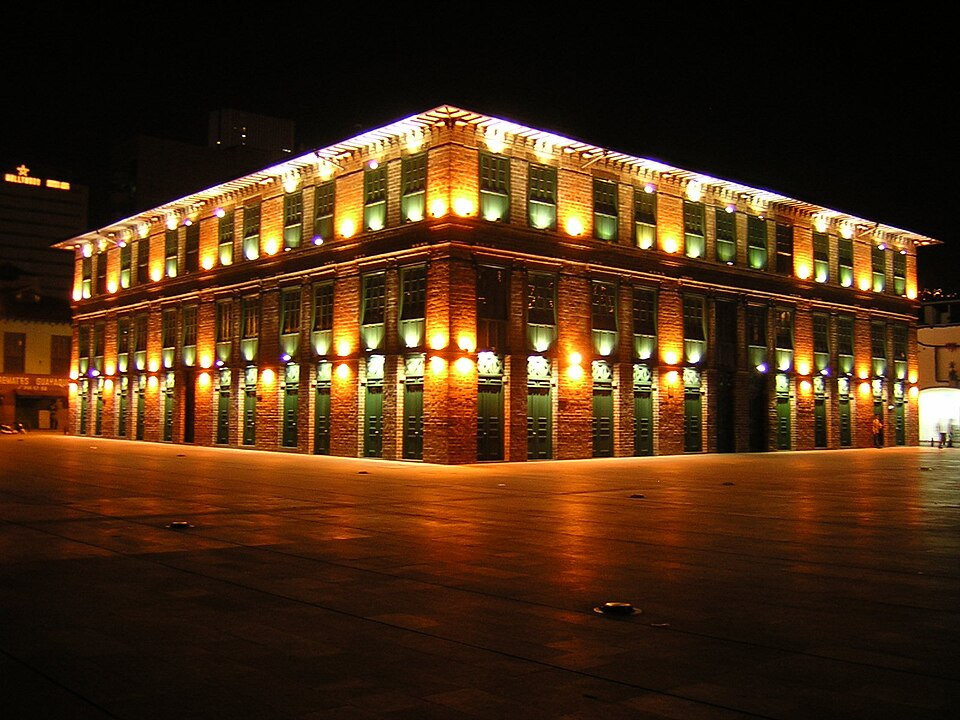
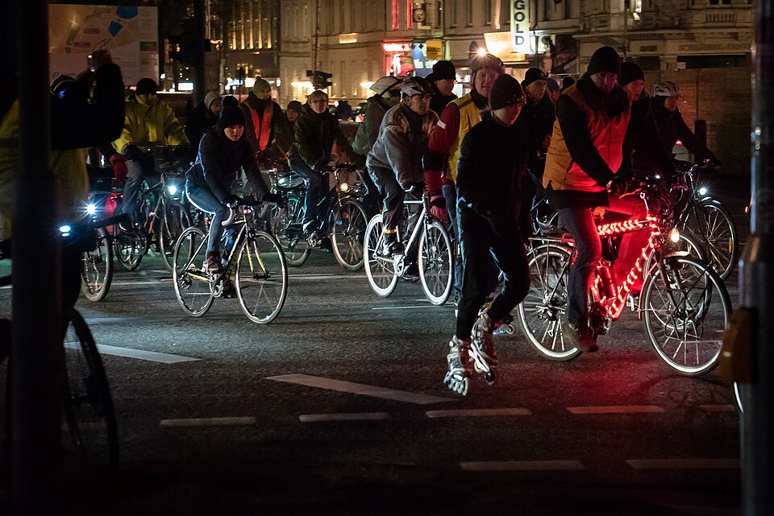
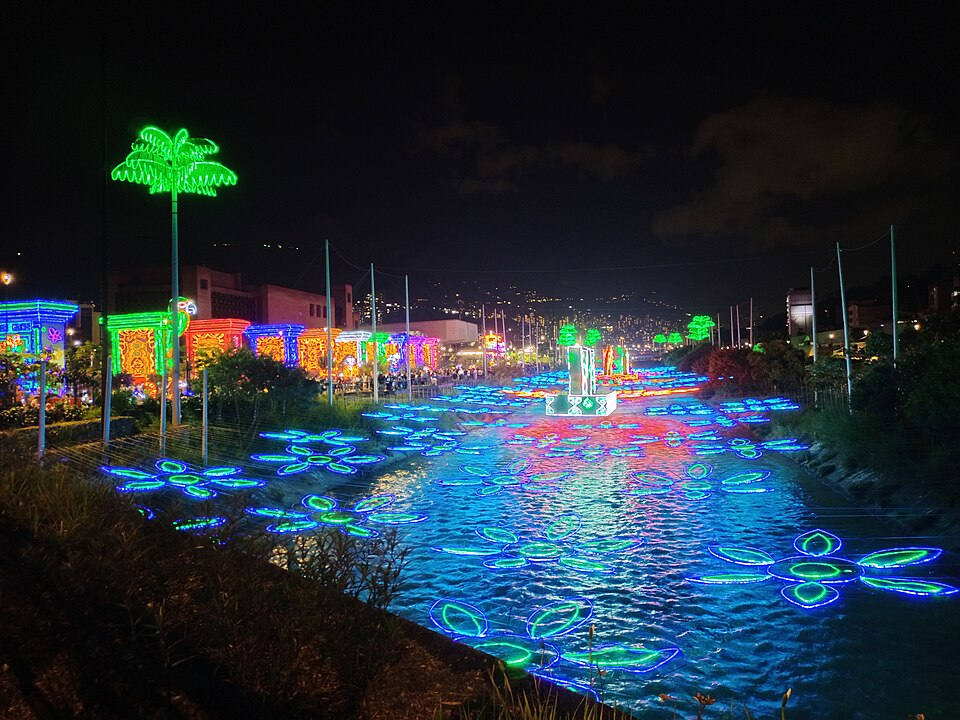
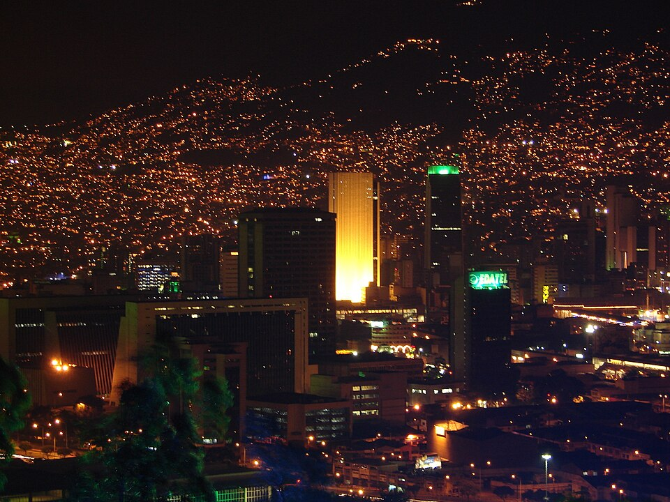

Fácil
$55.000
Luces del Centro
- Distancia
- 10 km
- Duración
- 2 h
- Punto de encuentro
- Sede de Rueda Libre

Nuevo · Jueves a sábado
Descubre Medellín en bici cuando se encienden las luces
Rutas nocturnas
Elige la distancia y el ritmo que mejor se ajusten a tu experiencia. Todas las salidas incluyen guía certificado, bicicleta urbana, luces y chaleco reflectivo.

$55.000

$65.000

$75.000
Paso a paso
En cuatro pasos sencillos te unes a nuestras rodadas nocturnas con todo el equipo de seguridad incluido.
Selecciona el recorrido nocturno que mejor se ajuste a tu nivel, distancia y horario preferido.
Reserva tu cupo en línea en menos de dos minutos y recibe la confirmación por correo.
Llega 20 minutos antes a la sede para recibir bici ajustada, casco, luces y chaleco reflectivo.
Pedalea en grupo por las ciclorrutas iluminadas de Medellín acompañado por guías expertos.
Cupos limitados por salida
Salidas todos los jueves, viernes y sábados desde la Sede de Rueda Libre. Incluye guía, luces y chaleco reflectivo.